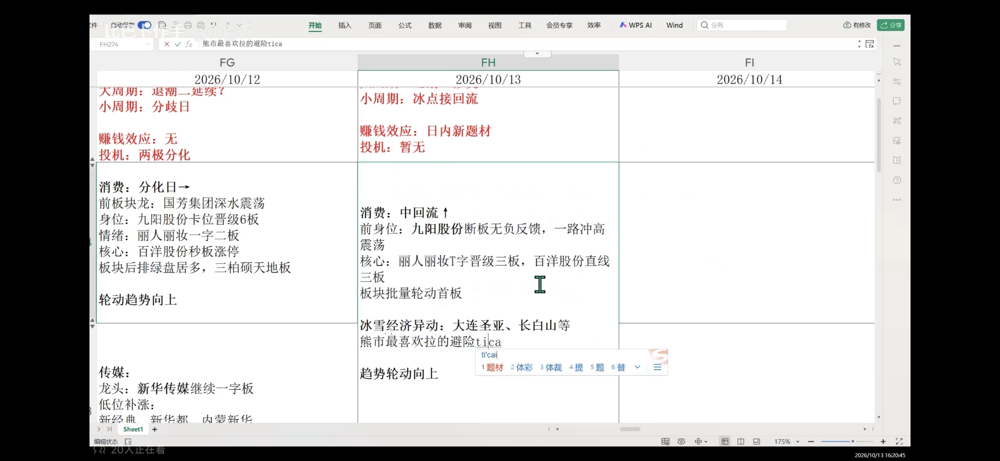

心得初版 / 交割待补
2026.10.08 -2026.10.16两周交割复盘
弱天时控制仓位，补涨提前准备，趋势抱团守住定力
第一周10.08-10.09 / 2个交易日第二周10.12-10.16 / 5个交易日
本期心得总结
弱天时控制仓位，补涨提前准备，趋势抱团守住定力
依据本次对话中的分段口述心得、补充文字及10月12日至13日盘面笔记截图整理。
心得包含当时预案、事后评价和后续认知更新，尚未逐条对应成交日期。实际买卖、费用、仓位、账户收益与期末持仓等待交割资料核对。
01
先判天时：退潮、亏钱效应与情绪总载体缺位
这段行情的核心体感是中高位赚钱效应差、亏钱效应占主导。四板以上集中断板，个别股票转强并不代表整体情绪已经修复；没有情绪总载体，是当前最重要的问题。
弱天时对应主动降仓、轻仓试错、慢进快出。即使交易思路做对，也不能因为几次操作顺利就放大总仓位；先接受环境给出的风险约束。
消费与AI应用是口述前段保留的主要观察方向，后段进一步纳入小PCB的科技趋势抱团。电池、风电、农业、创新药在对应观察时点被降级处理，这些是当时判断，不作为整个区间始终不变的市场结论。
02
题材反推：断板后的强弱仍要回到题材支撑
九阳股份断板后还能向趋势发展，自己的理解是消费板块持续轮动，能反推核心个股；时代万恒缺少同等题材助力，电池预期减弱后，参与把握也随之下降。
新华传媒的预期，使AI应用和传媒方向仍有观察价值；但内蒙新华跌停也是负反馈和吹哨信号。梯队完整与风险警示需要同时看，不能只取有利的一面。
冰雪经济被自己视为弱市资金偏好的避险分支。10月13日截图记录大连圣亚、长白山等异动；重点是观察消费分支能否发展，而不是仅凭异动就认定新的情绪载体已经形成。
03
两条接力路径：一进二切换，三进四选有题材的核心
低位路径是消费分化后的一进二选强，观察冰雪等分支的持续性；中位路径是三进四比较有题材支撑的核心。自己对切换还不够熟练，下一阶段需要把龙头接力和切换接力一起补齐。
早段口述对丽人丽妆式纯抱团参与把握不足，选择回避；后段通过超声电子的操作，逐渐明确自己能够适应有题材支撑、辨识度突出的科技趋势抱团。这里保留的是认知变化，不把所有抱团混成同一种模式。
当二板、三板或更高身位缺少题材、晋级预期和剩余空间时，不因为没有其他机会就硬做。
04
补涨接力：核心PK提前准备，剩余空间分阶段看
慈文传媒与新经典的比较，是本次最明确的排单反思。自己更偏向慈文，依据是人气、筹码结构、整体审美及盘中认可度变化；不能只看最初哪只封单更多。龙版传媒在当时预案中的预期相对较低。
口述将慈文视为新华传媒的补涨，将百洋视为九阳股份的补涨。高度先按对应龙头的一半评估：慈文先看五板附近，四板参与要核对剩余空间；六至七板只是可能延伸，不能提前当成必然利润。百洋的高度预期偏向三至四板。
当补涨阶段已经走完、剩余空间不足，或龙头即将复牌改变了补涨预期，就不继续抬高预期。口述后段已将慈文与百洋的原有补涨参与窗口作了降级。
执行遗憾是三板阶段识别核心之后排单偏慢、首次参与不足。希望更早完成隔夜委托准备，分仓排单，再结合次日盘中强弱作取舍。
05
入场场景：隔夜排核心与放量回封分别记录
一种思路是板块仍在发酵、属于强势分化时，集中在前排核心排隔夜单，排得到才参与，排不到就放弃。隔夜排单的具体机制和操作时机，是本次明确提出的专项学习项。
另一种思路是在分歧延续或回流过程中等待爆量换手与回封，尤其此前没有充分放量时，不能仅凭连续一字的强度就直接参与。
弱环境下炸板优先兑现；强环境下，充分换手后的回封可能成为新的观察买点。这几段口述的环境、入场时点不同，先分别保留；隔夜排单与回封参与的适用边界、切换条件和仓位比例待进一步补充。
06
龙头交易：判断值得保留，利润兑现仍有改进空间
自己整体认可两次龙头交易的判断与退出策略。关键晋级由六进七时，如果没有足够强度，反而放量分歧、炸板，就不继续给高位延伸预期；正常题材龙头尚未打开高度时，不能提前把七板突破视为必然。
盯盘不够紧，是本次利润兑现的主要遗憾。口述估计浮盈从约八个点回落到五个点，若及时执行可能保留约七个点；这些是个人回顾估计，具体标的、时点和实际收益后续与交割单核对。
金字塔建仓比例需要改善：首笔比此前重一些，第二笔补齐计划仓位；同时希望板上先兑现约一半，改善首次参与不足、后续兑现不够的问题。这里是计划比例，总仓位仍服从弱天时约束。
07
监管反抽：小仓位参与下跌后的修复，定位吃小肉
闽东电力这次监管战法的执行，得到自己的明确认可。观察顺序是先有下跌波段，缩量到极致后再出现反抽上涨，寻找轻仓参与的机会。
核心定位是小仓位博弈、小利润兑现，不把反抽交易无限扩大预期。前段口述目标为五至八个点，后段表述为五至十个点，先保留这一区间变化，具体标准后续按案例再核对。
关于‘头七天先做’的确切参照、异动窗口和执行时间尚未讲完整，暂不补写成确定的监管规则。
08
趋势抱团与连板转趋势：辨识度、题材持续性和持股定力
通过超声电子这次操作，自己发现科技趋势抱团也是适应的模式。小PCB被视为科技反弹的重要观察方向，聚焦少数最具辨识度的核心，而不是到处寻找低辨识度替代品。
趋势持有不要求每天涨停，重点观察是否出现负反馈；盘中一次下杀不应自动推翻原有判断。这类交易更考验拿得住的定力，与短线反抽吃小肉的持有预期需要分开。
另一项准备补齐的模式，是连板龙转趋势龙后的‘绕异动’参与方式。消费侧关注九阳股份，传媒侧关注新华传媒；时代万恒虽然同样被提到，但电池题材预期较弱，自己把握不足。
09
参与边界：少抄下降波段，不乱接加速，不把修复当拐点
下降波段减少抄底。按自己的判断标准，没有重新站上五日线的反弹，只视为偏离五日线过远后的修复，不能据此认定已经企稳或出现趋势拐点。
弱环境下严格筛选加速板，没有特别好的条件就不接；即使环境好，也需要题材预期。没有经历充分量能交换、分歧与一致消化就直接加速，是本次反复强调要回避的形态。
连续一字顶高度、涉及停牌预期的特殊玩法，自己的原则是退出前置。具体异动和停牌条件、时间窗口仍待补充，不将口述写成已经明确的触发规则。
10
下一阶段：补隔夜排单、切换接力与模式边界
专项一是隔夜排单：提前完成核心比较与委托准备，研究实际受理机制和提交时机，避免判断完成但执行跟不上；这次先记录学习需求，尚未展开机制研究。
专项二是切换接力：向口述中提到的‘董事长’学习龙头接力与切换接力，补齐自己目前还不熟悉的切换环节。
专项三是执行一致性：把首笔仓位、第二笔补仓、板上分批兑现、盘中观察和退出前置串起来。保留当前仓位控制的优点，在风险可控的前提下改善利润兑现。
四类模式的参与与退出边界
| 模式 | 入场观察 | 仓位定位 | 退出与持有 | 继续补齐 |
|---|---|---|---|---|
| 龙头与补涨接力 | 有题材、核心PK与剩余空间；隔夜排单和放量回封分场景记录 | 首笔比例改善，第二笔补齐计划；总仓位受天时约束 | 弱环境炸板优先兑现；补涨接近预期高度及时处理 | 隔夜委托机制、两类入场条件及具体仓位比例 |
| 监管反抽 | 下跌波段后，极致缩量再出现反抽上涨 | 小仓位博弈 | 口述先提5-8个点，后提5-10个点；定位小利润兑现 | 头七天的参照、具体异动窗口和案例目标 |
| 科技趋势抱团 | 题材有持续性，聚焦少数最具辨识度的核心 | 弱天时仍控制总仓位 | 观察负反馈，允许持有更久，不要求每天涨停 | 实际持仓、负反馈的具体定义及减仓条件 |
| 连板龙转趋势龙 | 关注题材反推、断板后趋势与绕异动过程 | 具体比例待补 | 不把修复直接升级为拐点，不随意抬高高度预期 | 绕异动条件、入场节点与失效标准 |
口述标的与交割核对
以下是心得提及的标的及其讨论角色，候选观察与实际操作分别记录。
| 标的 | 讨论角色 | 心得要点 | 交割状态 |
|---|---|---|---|
| 九阳股份 | 口述龙头回顾 / 趋势观察 | 消费反推、断板转趋势；高位晋级与利润兑现是回看重点。 | 待核对 |
| 时代万恒 | 口述龙头回顾 / 降级观察 | 高位强度与退出纪律；后段因电池题材预期减弱而降低参与把握。 | 待核对 |
| 慈文传媒 / 新经典 | 补涨比较 / 排单机会 | 核心PK、筹码与封单动态；重点反思慈文三板排单偏晚，未填实际成交。 | 待核对 |
| 新华传媒 / 百洋股份 | 龙头与补涨预期参照 | 对应高度、剩余空间及龙头复牌对补涨预期的影响。 | 待核对 |
| 闽东电力 | 口述监管反抽操作 | 本人认可执行；买卖时间、数量、费用与实际利润待交割核对。 | 待核对 |
| 超声电子 | 口述科技趋势抱团操作 | 本人认可交易体验；持股定力、辨识度与实际交易结果待交割核对。 | 待核对 |
| 丽人丽妆 / 内蒙新华 / 龙版传媒 | 比较或风险观察 | 分别涉及抱团适应性、负反馈警示和补涨预期比较，不计为已确认成交。 | 待核对 |
本期执行改进
Keep 保持
弱天时控制总仓位；先看题材与辨识度；保留龙头退出和监管反抽中自己认可的执行。
Improve 改进
隔夜排单前置；优化首笔与第二笔比例；盯盘执行更紧；板上分批兑现，改善利润回吐。
Start 启动
专项研究隔夜委托；补齐切换接力、科技趋势抱团和连板转趋势的适用条件与退出边界。
Stop 停止
下降波段随意抄底；弱环境乱接加速；缺少空间仍追补涨；把偏离修复当企稳，或提前透支高位延伸预期。
账户收益与仓位
账户表尚未提供。本期收益、仓位和权益暂留空，后续与交割核对。
本期账户收益待补本期收益率待补平均仓位待补期末总资产待补最大盈利日待补最大亏损日待补
| 日期 | 星期 | 收益金额 | 收益率 | 仓位 | 当前总金额 |
|---|---|---|---|---|---|
| 2026-10-08 | 周四 | 待补 | 待补 | 待补 | 待补 |
| 2026-10-09 | 周五 | 待补 | 待补 | 待补 | 待补 |
| 2026-10-12 | 周一 | 待补 | 待补 | 待补 | 待补 |
| 2026-10-13 | 周二 | 待补 | 待补 | 待补 | 待补 |
| 2026-10-14 | 周三 | 待补 | 待补 | 待补 | 待补 |
| 2026-10-15 | 周四 | 待补 | 待补 | 待补 | 待补 |
| 2026-10-16 | 周五 | 待补 | 待补 | 待补 | 待补 |
期末持仓与资金核对
| 证券代码 | 名称 | 持仓数量 | 含费成本 | 期末市值 | 浮动盈亏 |
|---|---|---|---|---|---|
| 待补10月16日期末持仓、现金与账户总资产。 | |||||
期初以10月8日前账户记录为准，跨期成本和期间资金变动一并核对。
逐日交割与反思核对
本次心得先按主题归档，尚未确定的口述内容不分配到具体交易日。
| 日期 | 星期 | 当日买卖 | 成交核对 | 当日心得归属 |
|---|---|---|---|---|
| 2026-10-08 | 周四 | 待补交割单 | 待核对 | 待对应日期 |
| 2026-10-09 | 周五 | 待补交割单 | 待核对 | 待对应日期 |
| 2026-10-12 | 周一 | 待补交割单 | 待核对 | 待对应日期 |
| 2026-10-13 | 周二 | 待补交割单 | 待核对 | 待对应日期 |
| 2026-10-14 | 周三 | 待补交割单 | 待核对 | 待对应日期 |
| 2026-10-15 | 周四 | 待补交割单 | 待核对 | 待对应日期 |
| 2026-10-16 | 周五 | 待补交割单 | 待核对 | 待对应日期 |
本期成交明细
| 日期 | 时间 | 代码 | 名称 | 方向 | 数量 | 成交均价 | 成交金额 | 费用 | 发生金额 |
|---|---|---|---|---|---|---|---|---|---|
| 待补2026.10.08-10.16交割单。 | |||||||||
原始盘面记录
10月12日至13日盘面笔记截图

交易日期：10月8日、9日、12日至16日，共7个交易日。上交所休市安排
后续待补内容
交割与账户资料
- 10月8日至16日完整成交记录：日期、时间、代码、方向、数量、价格、成交额和费用。
- 七个交易日的收益金额、收益率、仓位、当前总金额，以及期间入金、出金等资金变动。
- 10月8日前期初持仓与成本、10月16日期末持仓、现金和总资产。
- 交割核对后再补重点标的真实走势与买卖点、逐日归因，以及利润兑现的具体时间。
口述表述待核对
- 口述后半段的‘中文传媒’是否仍指慈文传媒，暂不合并为同一标的。
- 小PCB另一只标的口述为‘二红 / 奥红’，证券名称和代码待确认。
- ‘头七天’及‘绕异动’的具体时间参照尚未完整，暂不补写规则。
- 隔夜排单与爆量回封的适用条件、总仓位上限和分仓比例待明确。
- 约8个点回落至5个点、原可保留约7个点的回顾估计，待对应标的和交割数据核对。
- 末尾英文‘Dont keep that money’保留原文，暂不转成新的交易纪律。